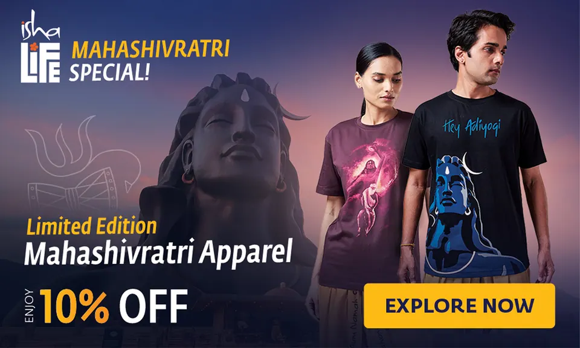

Mahashivratri
One night, one image, every screen. A campaign system for one of the largest night-long celebrations in the world, carried from a phone banner to an LED wall.

Bring the grace of Adiyogi home.
The brief was to make one feeling travel: the stillness of Adiyogi under a night sky, carried into a shop banner, an inbox and a stage screen without losing its calm. The answer was one key visual, with a deep indigo night, a crescent moon and warm gold type, framed so that every format could crop from it.


A kit, not a poster.
A design asset board fixed the type, the palette, the badge language and the hand-drawn trident and damru line art. With the kit in place, every designer could produce on-brand pieces quickly, and review could focus on ideas instead of corrections.


Fedra Sans for headlines and body, with a brush script for the Adiyogi wordmark.
Night indigo, gold and warm off-white, so even a small badge reads as Mahashivratri.
Trident, damru and crescent drawings used as texture across every format.
Bringing it to the screen.
Two product films carried the season into motion: the Adiyogi miniature statues, and the Sarpa Sutra energised ring.
Role on these films: strategy and part of the direction. Also on screen in both.
Rolled out across every channel.
The same system stretched to apparel launches, gift sets, emailers, social ads and the LED display at Isha Yoga Center, Coimbatore. One visual idea, many formats, one consistent night.


